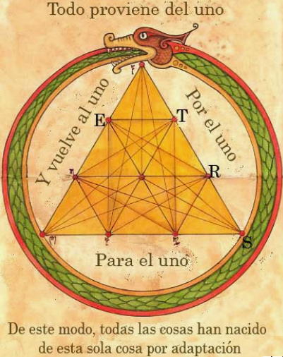

Filosofía

Su filosofía estaba basada en el punto, como sinónimo de la unidad, a partir del cual se origina todo, hasta alcanzar el número más perfecto, el número diez, porque es la suma de los cuatro primeros números y por formar un triángulo equilátero, el Tetrarkys, símbolo de los pitagóricos. Para él, todo estaba basado en los números, que era el medio por el cual el universo se conservaba en armonía.
La simbología de la Tetrarkys indicaba que el principio de todo es el Uno que origina el Dos, la dualidad, que a su vez da origen al Tres que encierra todos los seres existentes.
Su concepto de que el ser humano es parte Cuerpo y parte Alma y que el Alma es inmortal, dejo huellas en las generaciones posteriores. Ese concepto alimentó el pensamiento de los filósofos que lo sucedieron, incluyendo a Sócrates y Platón.
De allí surgen sus creencias sobre la reencarnación y la necesidad de purificar el cuerpo y el alma para alcanzar estados de desarrollos cada vez más elevados. A continuación un videos sobre ello: https://www.youtube.com/watch?v=T9qdRRYvQbk
- Actividad No. 3 Preguntas para Lectura Activa
-
- ¿En que estaba basada su filosofía?
- ¿Cuál era el símbolo de los pitagóricos?
- ¿Qué concepto importante influencio a Sócrates?